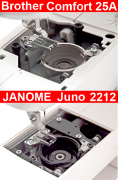
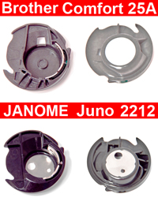
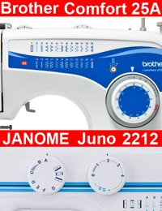

|
Сегодняшний выбор пал на электромеханические машины с горизонтальном челноком. А именно на машинки Brother Comfort 25a и Juno ТС 2212, производителей гигантов Brother и Janome соответственно. Обе фирмы мастера своего дела,Brother начал свою деятельность в 1898 году, а Janome
24-мя годами позже. Ну и как полагается у солидных производителей есть свои фирменные знаки. Первые всегда отличались своим великолепным дизайном, а вот вторые наоборот выделяются своим аскетичным видом…
Janome Juno ТС 2212
материализовалась из чертежей японских инженеров в готового бойца иглы и нити в 2008 году, а вот
Brother Comfort 25a
уже давно прельщает своих потенциальных хозяев. Оба конкурента родом из Японии, но отличаются местом сборки: Brother Comfort 25a впервые увидел свет в Китае, а вот в Juno ТС 2212 последний винт вкрутили уже на Тайване.
|
|  |
Обе машины имеют примерно одинаковый вес, не превышающий 7 килограмм. Копнем дальше, а вернее снимем игольную пластину. Выясняется, что Brother не имеет металлической станины, а вот у Janome все обстоит значительно надежнее. Конечно, напрашивается вопрос, а почему тогда вес одинаков? Давайте разбираться вместе... При дальнейшем «оголении» конкурсантов все становится ясно, в Brother Comfort 25a стальные сплавы заменены силуминовыми, что конечно же, не придает ей надежности да и выносливости, и означает, что машина предназначена в основном для шитья тонких и средних материалов. Малышка Juno, при близком рассмотрении показала себя более металлической, что отражается на опоре челночной группы и вала. |
|  |
|  | Теперь вновь коснемся внешнего вида и эргономики испытуемых. Как уже мы отметили раннее, Brother Comfort 25a весьма хорош собой, машина выполнена в сине-бело-голубых тонах в виде волны, регулятор длины стежка и переключения операции вынесен на переднюю панель, что позволяет быстро воплотить наши задумки. Ширина зигзага и натяжение нити располагаются на верхней части агрегата. Janome же, более угловата, да и все настройки выведены вперед, даже ширина зигзага, расположенная на регуляторе выбора операции, что кажется менее удобным. |
|
Правила игры: Обе машины работают до 2,5 часов без перерыва Результаты: Janome Juno чуть нагрелась и на протяжении всего времени работы не изменила звука. Brother Comfort 25a нагрелся значительнее. Вот и проявилось то самое решение прикрутить органы машины к ее корпусу из пластмассы. Да и стук стал заметным, что тоже напрямую завязано с отсутствием станины. |
|
Суть конкурса: Шьем органзу, шелк, шифон. Естественно на иголочке с номером 60. Результаты: Обе машины, с небольшими затруднениями, в виде стягивания, справились с задачей. |
|
Материал:
Достаточно плотная джинса. Результаты:: Brother на двух слоях начал трещать, и я испугался продолжать, сняв конкурсанта с дистанции. Janome довольно легко прошила шесть слоев, доказав свою универсальность. |
В данной статье мы провели сравнение швейных машинок Janome Juno ТС 2212 и Brother Comfort 25a. Получить информацию о сравнении других швейных машин вы можете на странице «обзоры». Сайт регулярно обновляется и дополняется новыми обзорами, не пропустите!